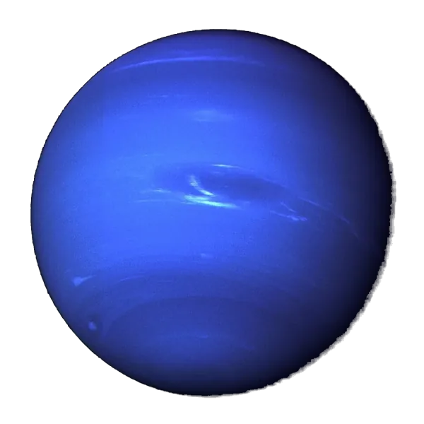

← Planetsग्रहPlanetasPlanetasPlanètesالكواكب

NeptuneवरुणNeptunoNetunoNeptuneنبتون
Planet 8 from the Sunसूर्य से ग्रह क्रमांक 8Planeta 8 desde el SolPlaneta 8 a partir do SolPlanète 8 à partir du Soleilالكوكب 8 من الشمس
When and how it formedकब और कैसे बना
Neptune is Uranus's twin: a big ice-and-rock core with a thinner gas layer. It most likely formed closer to the Sun and was pushed outward, scattering icy bodies and shaping the Kuiper Belt beyond it.नेपच्यून यूरेनस का जुड़वाँ है: बर्फ़ और चट्टान का बड़ा core, गैस की पतली परत के साथ। सबसे संभावना है कि यह सूरज के ज़्यादा पास बना और बाहर धकेला गया, जिससे बर्फ़ीले पिंड बिखरे और उसके आगे Kuiper Belt बना।
An icy core grows and collects a thin envelope of gas.बर्फ़ीला core बढ़ता है और गैस की पतली परत जमा करता है।
It migrates outward, scattering icy bodies; some are flung toward the inner planets.यह बाहर की ओर खिसकता है, बर्फ़ीले पिंडों को बिखेरता है; कुछ भीतरी ग्रहों की ओर फेंके जाते हैं।
It pushes Pluto and other bodies into step with its own orbit (2 Pluto years for every 3 Neptune years).यह प्लूटो और दूसरे पिंडों को अपनी कक्षा की लय में ले आता है (नेपच्यून के हर 3 साल में प्लूटो के 2 साल)।
It captures Triton, a dwarf planet from the Kuiper Belt.यह Kuiper Belt के एक बौने ग्रह, Triton, को पकड़ लेता है।
All dates are estimates from meteorites, moon rocks, space missions and computer models.सभी तारीख़ें अनुमान हैं, जो उल्कापिंडों, चाँद की चट्टानों, अंतरिक्ष missions और computer models से आती हैं।
Inside this world · Tap a layerआंतरिक संरचना · किसी परत पर टैप करेंDentro de este mundo · Toca una capaDentro deste mundo · Toque em uma camadaÀ l'intérieur de ce monde · Touchez une coucheداخل هذا العالم · المس طبقة
Telescope eyepiece simulatorदूरबीन ज़ूम सिम्युलेटर (1x · 10x · 100x)Simulador de ocular de telescopioSimulador de ocular de telescópioSimulateur d'oculaire de télescopeمحاكي عدسة التلسكوب
AtmosphereवायुमंडलAtmósferaAtmosferaAtmosphèreالغلاف الجوي
Oxygen vs Earthऑक्सीजन: पृथ्वी से तुलनाOxígeno frente a la TierraOxigênio comparado à TerraOxygène comparé à la Terreالأكسجين مقارنة بالأرض: 0% / 20.95%0% / 20.95% · Not breathable, a spacesuit is neededसाँस लेने लायक नहीं, स्पेससूट ज़रूरी हैNo respirable, hace falta un traje espacialNão respirável, é preciso traje espacialNon respirable, une combinaison spatiale est nécessaireغير صالح للتنفس، يلزم بدلة فضاء
Could humans live here?क्या इंसान यहाँ रह सकते हैं?¿Podrían vivir humanos aquí?Humanos poderiam viver aqui?Des humains pourraient-ils y vivre ?هل يمكن للبشر العيش هنا؟
Scored from temperature, air pressure, oxygen, water, surface and gravity. Earth scores 10.तापमान, हवा के दबाव, ऑक्सीजन, पानी, सतह और गुरुत्वाकर्षण से गिना गया। पृथ्वी का स्कोर 10 है।Puntuado según temperatura, presión del aire, oxígeno, agua, superficie y gravedad. La Tierra obtiene 10.Pontuado a partir de temperatura, pressão do ar, oxigênio, água, superfície e gravidade. A Terra tira 10.Noté d'après la température, la pression de l'air, l'oxygène, l'eau, la surface et la gravité. La Terre obtient 10.تُحسب النتيجة من الحرارة وضغط الهواء والأكسجين والماء والسطح والجاذبية. تحصل الأرض على 10.
60 kg on Earth feels likeपृथ्वी के 60 किलो यहाँ इतने लगेंगे60 kg en la Tierra se sienten como60 kg na Terra parecem60 kg sur Terre donnent l'impression de60 كغ على الأرض تبدو
1.12× Earth's gravityपृथ्वी के गुरुत्व का 1.12×1,12× la gravedad de la Tierra1,12× a gravidade da Terra1,12× la gravité de la Terre1.12× جاذبية الأرض · Your weight on other planetsदूसरे ग्रहों पर आपका वज़नTu peso en otros planetasSeu peso em outros planetasVotre poids sur d'autres planètesوزنك على كواكب أخرى
Did you know?क्या आप जानते हैं?¿Sabías que…?Você sabia?Le saviez-vous ?هل تعلم؟
Neptune has the fastest winds of any planet, more than 2,000 km/h.वरुण पर किसी भी ग्रह से तेज़ हवाएँ चलती हैं, 2,000 किमी/घंटा से भी ज़्यादा।Neptuno tiene los vientos más rápidos de todos los planetas, de más de 2.000 km/h.Netuno tem os ventos mais rápidos de todos os planetas, de mais de 2.000 km/h.Neptune a les vents les plus rapides de toutes les planètes, plus de 2 000 km/h.لنبتون أسرع رياح بين الكواكب، أكثر من 2,000 كم/س.
Neptune was found with maths before anyone saw it: in 1846 astronomers worked out where it had to be.वरुण को किसी के देखने से पहले गणित से खोजा गया: 1846 में खगोलविदों ने हिसाब लगाया कि वह कहाँ होना चाहिए।Neptuno se encontró con matemáticas antes de que nadie lo viera: en 1846 los astrónomos calcularon dónde tenía que estar.Netuno foi achado com matemática antes de alguém vê-lo: em 1846, astrônomos calcularam onde ele tinha de estar.Neptune a été trouvée par les maths avant que quiconque la voie : en 1846, des astronomes ont calculé où elle devait être.اكتُشف نبتون بالرياضيات قبل أن يراه أحد: ففي عام 1846 حسب الفلكيون موضعه المتوقع.